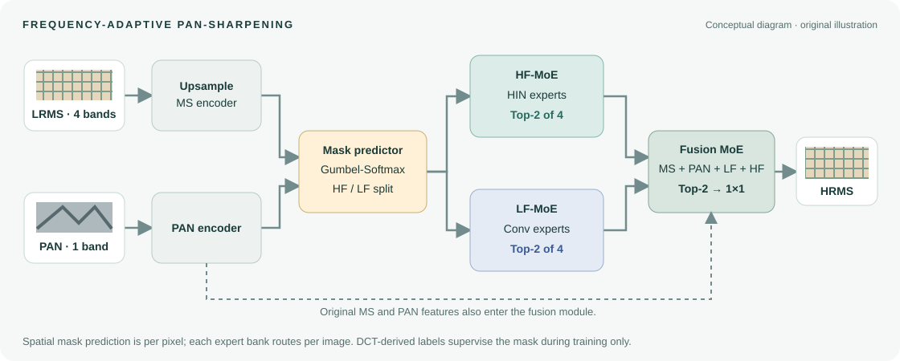

Spatial allocation
Frequency mask
DCT-derived supervision teaches a differentiable hard mask to allocate high- and low-frequency regions.
AAAI 2024 / Remote sensing & image fusion
1 Hefei Institutes of Physical Science, Chinese Academy of Sciences · 2 University of Science and Technology of China · 3 Nanyang Technological University
* Equal contribution · † Corresponding authors

01 / Method
A learned spatial frequency mask directs detail-rich and smoother regions into specialized processing streams. Each mixture uses image-level top-k routing, rather than applying every expert indiscriminately.
Spatial allocation
DCT-derived supervision teaches a differentiable hard mask to allocate high- and low-frequency regions.
Specialization
HIN blocks process detail-rich regions; residual convolution blocks handle smoother regions.
Adaptive fusion
Top-2 weighting over four fusion experts combines both frequency streams with PAN and MS features.
02 / Original AAAI results
The published reduced-resolution experiments evaluate spectral and spatial reconstruction on three sensors under the Wald protocol.
WorldView-II
Published PSNR
GaoFen2
Published PSNR
WorldView-III
Published PSNR
| Sensor | PSNR ↑ | SSIM ↑ | SAM ↓ | ERGAS ↓ |
|---|---|---|---|---|
| WorldView-II | 42.0262 | 0.9723 | 0.0215 | 0.9172 |
| GaoFen2 | 47.6721 | 0.9898 | 0.0098 | 0.5242 |
| WorldView-III | 30.9903 | 0.9287 | 0.0697 | 2.9531 |

Original image could not load. View the comparison and feature maps directly in Figure 5–6 of the paper ↗
| Method | PSNR ↑ | SSIM ↑ | SAM ↓ | ERGAS ↓ |
|---|---|---|---|---|
| PanNet | 40.8176 | 0.9626 | 0.0257 | 1.0557 |
| MSDCNN | 41.3355 | 0.9664 | 0.0242 | 0.9940 |
| SRPPNN | 41.4538 | 0.9679 | 0.0233 | 0.9899 |
| GPPNN | 41.1622 | 0.9684 | 0.0244 | 1.0315 |
| MutNet | 41.6773 | 0.9705 | 0.0224 | 0.9519 |
| INNformer | 41.6903 | 0.9704 | 0.0227 | 0.9514 |
| SFINet | 41.7244 | 0.9725 | 0.0220 | 0.9506 |
| FAME-Net | 42.0262 | 0.9723 | 0.0215 | 0.9172 |
| Method | PSNR ↑ | SSIM ↑ | SAM ↓ | ERGAS ↓ |
|---|---|---|---|---|
| PanNet | 43.0659 | 0.9685 | 0.0178 | 0.8577 |
| MSDCNN | 45.6847 | 0.9827 | 0.0135 | 0.6389 |
| SRPPNN | 47.1998 | 0.9877 | 0.0106 | 0.5586 |
| GPPNN | 44.2145 | 0.9815 | 0.0137 | 0.7361 |
| MutNet | 47.3042 | 0.9892 | 0.0102 | 0.5481 |
| INNformer | 47.3528 | 0.9893 | 0.0102 | 0.5479 |
| SFINet | 47.4712 | 0.9901 | 0.0102 | 0.5479 |
| FAME-Net | 47.6721 | 0.9898 | 0.0098 | 0.5242 |
| Method | PSNR ↑ | SSIM ↑ | SAM ↓ | ERGAS ↓ |
|---|---|---|---|---|
| PanNet | 29.6840 | 0.9072 | 0.0851 | 3.4263 |
| MSDCNN | 30.3038 | 0.9184 | 0.0782 | 3.1884 |
| SRPPNN | 30.4346 | 0.9202 | 0.0770 | 3.1553 |
| GPPNN | 30.1785 | 0.9175 | 0.0776 | 3.2593 |
| MutNet | 30.4907 | 0.9223 | 0.0749 | 3.1125 |
| INNformer | 30.5365 | 0.9225 | 0.0747 | 3.0997 |
| SFINet | 30.5901 | 0.9236 | 0.0741 | 3.0798 |
| FAME-Net | 30.9903 | 0.9287 | 0.0697 | 2.9531 |
Best entries within each metric are emphasized. FAME-Net does not lead every SSIM or distortion metric.
Dλ = 0.0674 · Ds = 0.1121 · QNR = 0.8291 (Table 2).
| Configuration | WV2 PSNR ↑ | GF2 PSNR ↑ | WV3 PSNR ↑ |
|---|---|---|---|
| No frequency mask | 41.8998 | 47.5914 | 30.8387 |
| No fusion experts | 41.8274 | 47.3596 | 30.7930 |
| FAME-Net | 42.0261 | 47.6721 | 30.9903 |
Original Table 3. The WV2 full-model PSNR differs from Table 1 by 0.0001 dB in the source; both are reproduced as printed.
All numbers and qualitative results above are from the AAAI 2024 publication, not new results of the modern package. Original paper ↗
03 / Implementation
A standalone implementation corrects release-level routing bugs while following the paper's mathematical design. A legacy profile is retained for historical checkpoints.
Per-image sparse dispatch, full expert weights, explicit DCT mask supervision, deterministic evaluation, BF16-safe routing, strict weight loading and training/inference/benchmark CLIs.
git clone https://github.com/alexhe101/FAME-Net.git cd FAME-Net git switch refactor/modern-pytorch python -m pip install -e './modern[dev]' python -m pytest modern/tests -q -rs
Original trained weights and datasets are unavailable. Check CI for automated test status. Full training, dataset reproduction and CUDA latency have not yet been validated.
04 / Reference
@inproceedings{he2024fame,
title = {Frequency-Adaptive Pan-Sharpening with Mixture of Experts},
author = {He, Xuanhua and Yan, Keyu and Li, Rui and
Xie, Chengjun and Zhang, Jie and Zhou, Man},
booktitle = {Proceedings of the AAAI Conference on Artificial Intelligence},
volume = {38},
number = {3},
pages = {2121--2129},
year = {2024},
doi = {10.1609/aaai.v38i3.27984}
}